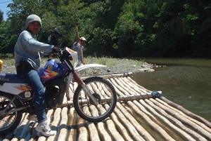

lanting 
/lantiŋ/
v_rt.
“raft_across”
1.
v.
for someone (eglanting, miglanting/inlanting, lanting, agent, eg><ø-) to start moving their raft (or boat) (eglantingen, inlanting/miglanting/piglanting, lantinga, theme, eg><en-) across water (eglantingan, inlantingan/miglantingan/piglantingan, lantingi, location, eg><an-)
Eglanting e ka gakit.
The raft is on going.
Eglantingen dan e ka gakit dan.
They start to move their raft.
Mabeheng ka eglantingan dan ne weyig.
The river that they crossed is fast flowing.
O. Syn. tuhun
cf. lawang
cf. subè
Eng. raft across, to; cross water; water, cross; river, cross; start sailing; set sail
DDP: River (1.3.1.3)
Online dict status: -
Usage level: R
2.
adj.
(malanting, mA1-) fast-flowing (of a river)
Syn. mabeheng —fast-flowing
O. Syn. malamit
Eng. fast-flowing; fast, of water; strong current; current, strong
DDP: Strong (2.4.1)
Online dict status: -
Usage level: R
Updated by: RJH,TME,NJK,QDL,NJK,RAA,QDL
Last updated: 27/Nov/2009
This page last updated: 28-Dec-2019
Copyright © 2009-2014, Matigsalug Language Christian Association, Inc